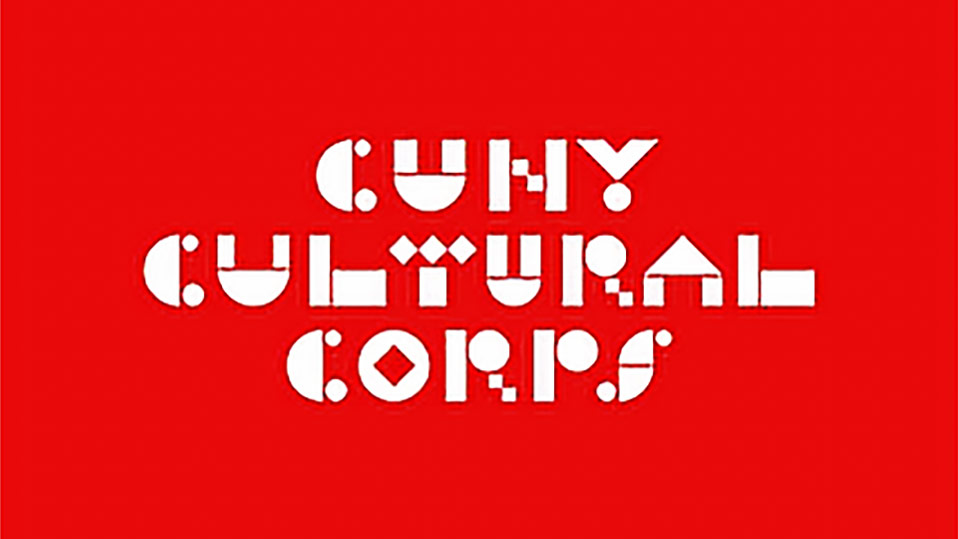

The Digital Odyssey 
Embarking on "The Digital Odyssey," I crafted a significant milestone in my journey by constructing my personal portfolio website. This endeavor not only served as a showcase of my skills but also represented my first foray into the realm of web development.
Utilizing the prowess of Adobe Dreamweaver, I intricately wove the fabric of the website, focusing on the seamless integration of design and functionality. Adobe Photoshop played a pivotal role in shaping the visual elements, ensuring a harmonious blend of creativity and technical precision.
The Digital Odyssey stands as a testament to my dedication and learning spirit, encapsulating the essence of my initial steps into the vast landscape of web design and development.
CUNY Arts

CUNY Arts is a captivating volunteer service where I ventured into the realm of digital creativity t express the vibrant culture and artistic endeavors within the CUNY community. My role was to be a modle during the photoshoot.
CUNY Arts seeks to showcase and promote the rich tapestry of creativity within the CUNY educational landscape. Check their blogs on Instagram-Cuny Arts.
Google Data Analytics 
The Google Data Analytics project marked a pivotal advancement in my analytical journey, building a foundation of professional-grade data insights. Through rigorous training and hands-on practice, I sharpened core competencies in data cleaning, exploration, visualization, and stakeholder communication.
My featured project, based on Cyclistic’s bike-share dataset, examined user behaviors across ride types and seasons. Using R programming and libraries like dplyr, ggplot2, and lubridate, I uncovered usage patterns between casual riders and annual members.
The final output combined storytelling, actionable recommendations, and visual clarity—demonstrating how thoughtful analysis can empower business decisions and elevate customer engagement.